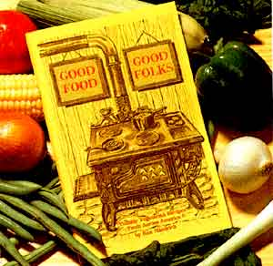

Issue # 86-March/April 1984
If you can gather up some lip-smackin'-good recipes and write them down in clear, understandable language - and if you're willing to invest some time and money to make more money-then chances are you can successfully publish your own cookbook. Believe me, I know: I've sold thousands of copies of my self-produced menu manual, Good Foodl Good Folks. And I started with little more than a notion to earn (somehow) my own living my own way.
A MARKETABLE IDEA
Even though I enjoy writing about meatless cooking, I never would have published my compendium without reasonable confidence that it would sell. But upon considering the high (and rising!) cost of meat, I thought it likely that there'd be a whole passel of budget-conscious folks out there willing to pay a measly $2.50 each for a fresh batch of vegetables-only recipes. And I figured that many prospective buyers could be reached rather easily through local retailers . . . and by advertising in magazines that have vegetarian followings.
In other words, once you've come up with what you think is a good idea for a cookbook (it could be anything from Banana Bakery to 101 Ways to Cook With Yogurt), try your best to objectively weigh that concept's marketability. Ask your friends what they think of the idea. And if you can, get the opinions of people in the business: I never pass up an opportunity to discuss a prospective title with bookstore owners and managers.
RECIPES
I scrounged the material for my cookbook from a variety of sources: my family . . . friends . . . and a good many MOTHER-readers, who very kindly sent me their favorite recipes in response to a Dear MOTHER letter from me that appeared in issue 51. Then I chose what seemed to be the most mouth-watering (and easiest-to-make) dishes-breads, soups, main dishes, and desserts-and prepared each one, in order to test the directions for clarity and accuracy. Once the "receipts" had been given the Haedrich stamp of approval, I set about carefully typing them. A neatly prepared manuscript is worth its weight in gold . . . it'll save you money, avoid delays, and help prevent typographical errors.
TYPESETTING (AND ALTERNATIVES)
Having your copy typeset has advantages: It can be done quickly, and the text looks attractive and thus helps to sell books. But unless you're lucky enough to have unlimited funds or a relative in the business, you'll probably want to use a less expensive technique (it never hurts to check around, though . . . you might find a small outfit willing to offer you a bargain price).
One option is to type each page on an ordinary typewriter or-better yet-an IBM Executive or Selectric. But perhaps the best of all possible shoestring techniques is handlettering . . . if, that is, you can provide the required artistic flair and patient attention to detail. I can think of several best-selling cook-books that are attractively hand-lettered (and, in fact, probably are popular largely because of their rustic format).
GRAPHICS
For visual interest, you'll want to pepper your pamphlet with plenty of illustrations (but not photos . . . even black-and-white Pictures add substantial expense, and color ones can double the total printing cost). If you're like me and have no more artistic talent than a walrus, enlist the aid of a friend or relative who can draw reasonably well. In typical MOTHER fashion, I bartered some yard work for the drawings in Good FoodlGood Folks, and although they may not be the fanciest of renderings, they do impart a perfect "homey" feel to my little volume.
LAYOUT AND PASTEUP
You'll save as much as a couple of hundred dollars if you do your own layout and pasteup. The only special supplies you'll need are rubber cement (and rubber cement "pickup" for removing smears). . . "LinUp" sheets or a similar brand of gridded pasteup board (one for each page of your book) . . . and several light blue nonphotographic pencils.
To lay each page out, draw the page size of your book on a "LinUp" sheet (using a blue pencil). Then position whatever illustrations and text you want on that page . . . outline the areas with your pencil . . . brush a coat of rubber cement on the back of the drawings and copy . . . and glue each element into place (taking care, of course, to align everything properly).
For a really thorough discussion of this procedure-and of printing in general-I highly recommend Printing It by Clifford Burke (available for $4.95 plus 50 cents shipping and handling from Wingbow Press, Dept. TMEN, 2929 Fifth Street, Berkeley, California 94710).
FINDING A PRINTER
Before choosing a printer, talk to talks who've previously done business with such firms in your locale. Then get in touch with the companies that seem to give the best service and ask each of them for a written price quote for printing your book. You'll need to provide them with some basic information: the number of pages (and photos, if any), the size of the book, the kind of paper and cover stock, and the type of binding you desire.
The cost of paper will constitute a good portion of your total production expense, so shop around. Good FoodlGood Folks is printed on 60-pound cream-colored stock that I got at a discount because I picked it up from the paper supplier myself and paid for it in cash. Printers have hundreds of paper samples on hand to show you and often can offer you "mill specials" (certain stocks that wholesalers are pushing at a discount price).
Of the several kinds of bindings available, I prefer saddle stitching (stapling along the fold): It's a neat, economical way to hold a cookbook together, and this arrangement allows the volume to lie flat when opened.
SELL, SELL, SELL!
OK. Your cookbook has been bound and delivered . . . you've celebrated with a bottle of wine . . and sold ten copies to your friends. Now, it's time to learn the First Commandment of the self-publisher: "Thou shalt get out there and sell thy pants off!"
Naturally, you'll want to hit all the local gift shops and bookstores right away. (Unless you're a personal friend, a retailer will expect a standard 40% discount . . . along with a promise that you'll buy back any unsold copies after six months.)
Direct sales are the most profitable, of course, since you eliminate your middleman's "take". If you send review copies of your book to the food editors at nearby radio stations and newspapers, you'll often get free (and productive) publicity. And try to arrange for all the garden club-type speaking engagements you can. On one such occasion, I spoke for 20 minutes or so, whipped up some recipes, and afterward sold 50 books!
COSTS
The amount of money you pay to produce your book will depend upon the resources you have (available money, friends or relatives who can provide cut-rate printing or typesetting, and so on) . . . and upon your own ingenuity (bartering for various services can go a long way toward keeping costs low).
Try to come up with a fairly accurate estimate of what the total cost will be before you actually start investing time and money in your project. You'll need to establish a tentative price for the book, too. The best way to do so is to comparison shop at local bookstores to see what similar publications are selling for.
Remember, too, that second and successive printings will cost far less, since typesetting, negative, and plate fees have already been met. Your per-book cost, therefore, will plummet . . . leaving you with a far larger profit margin!
EDITOR'S NOTE: Good Food/Good Folks is available for $2.50 postpaid from Ken Haedrich, American Impressions, Dept. TMEN, 410 Cleveland Avenue, Plainfield, New Jersey 07060.
For tips on self-publishing, and for case histories from a variety of do-it-yourself book producers, you may want to read The Publish-It-Yourself Handbook: Literary Tradition & How-To edited by Bill Henderson ($12.50 from the Pushcart Press, Dept. TMEN, P.O. Box 380, Wainscott, New York 11975).
|
 |
|
|